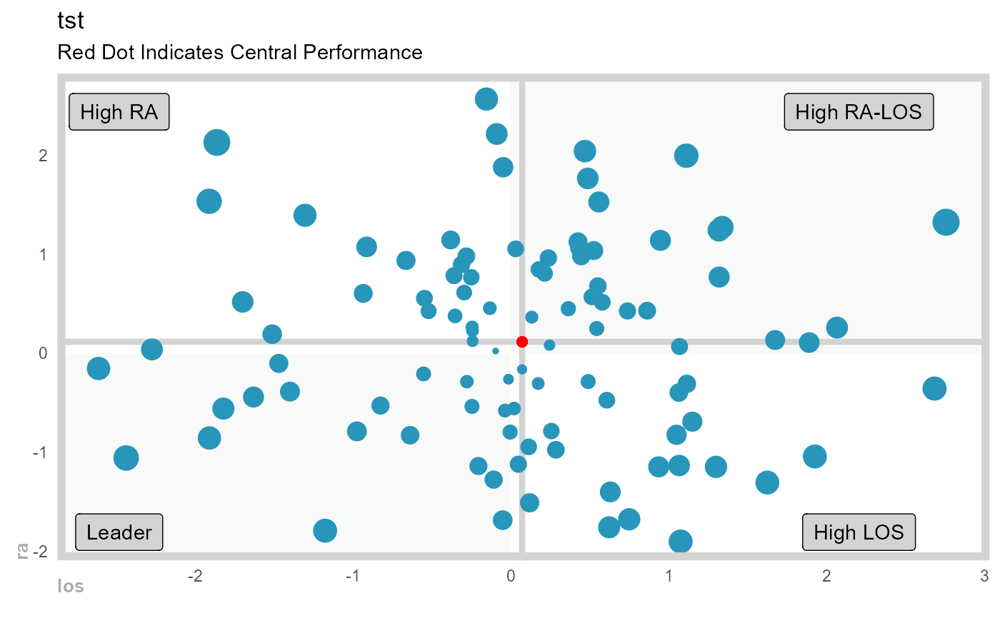
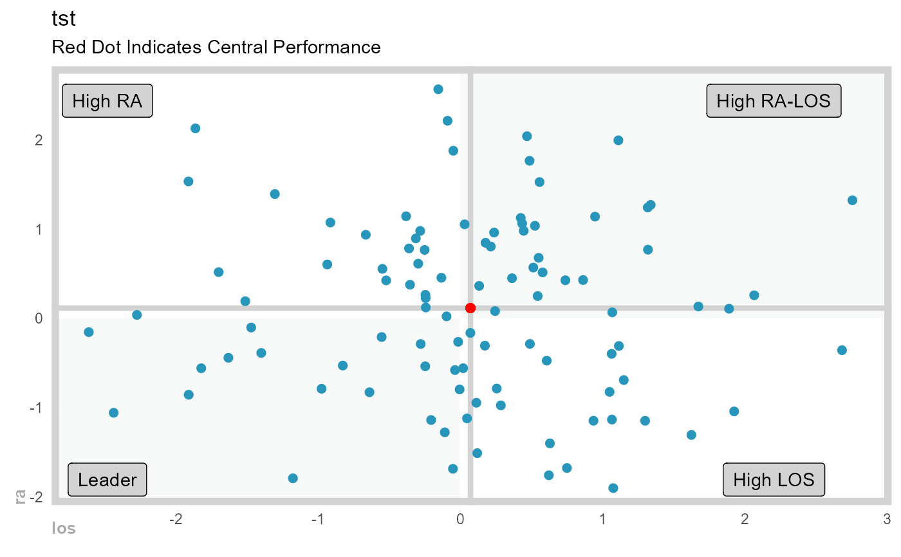

Gartner Magic Chart - Plotting of two continuous variables
Source:R/gartner_magic_chart.R
gartner_magic_chart_plt.RdPlot a Gartner Magic Chart of two continuous variables
Usage
gartner_magic_chart_plt(
.data,
.x_col,
.y_col,
.point_size_col = NULL,
.y_lab,
.x_lab,
.plt_title,
.tl_lbl,
.tr_lbl,
.br_lbl,
.bl_lbl
)Arguments
- .data
The data set you want to plot
- .x_col
The x-axis for the plot
- .y_col
The y-axis for the plot
- .point_size_col
The default is NULL, if you want to size the dots by a column in the data.frame/tibble then enter the column name here.
- .y_lab
The y-axis label
- .x_lab
The x-axis label
- .plt_title
The title of the plot
- .tl_lbl
The top left label
- .tr_lbl
The top right label
- .br_lbl
The bottom right label
- .bl_lbl
The bottom left label
Examples
library(dplyr)
data_tbl <- tibble(
x = rnorm(100, 0, 1),
y = rnorm(100, 0, 1),
z = abs(x) + abs(y)
)
gartner_magic_chart_plt(
.data = data_tbl,
.x_col = x,
.y_col = y,
.point_size = z,
.x_lab = "los",
.y_lab = "ra",
.plt_title = "tst",
.tr_lbl = "High RA-LOS",
.tl_lbl = "High RA",
.bl_lbl = "Leader",
.br_lbl = "High LOS"
)

gartner_magic_chart_plt(
.data = data_tbl,
.x_col = x,
.y_col = y,
.point_size = NULL,
.x_lab = "los",
.y_lab = "ra",
.plt_title = "tst",
.tr_lbl = "High RA-LOS",
.tl_lbl = "High RA",
.bl_lbl = "Leader",
.br_lbl = "High LOS"
)
